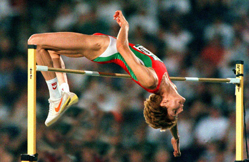
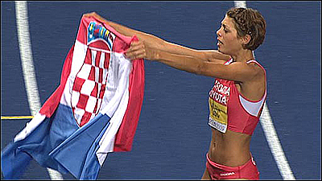

Balkan Records - 14/9/2013 updated


Stefka Kostadinova / BUL (High Jump World Record - 209 cm. since 1987)

- Stefka Kostadinova (Bulgarian: —ÚÂÙ͇ ÓÒÚ‡‰ËÌÓ‚‡) (born March 25, 1965 in Plovdiv, Bulgaria) is the current women's world record holder in the high jump. She is retired from competition and currently is president of the Bulgarian Olympic Committee.
- Kostadinova is the reigning world record holder in the women's high jump at 2.09 m which she jumped during the 1987 World Championships in Athletics in Rome. Her world record is one of the oldest in modern athletics. Altogether Kostadinova has set seven world records - three outdoors and four indoors. She has jumped over 2.00 m 197 times, an achievement unequalled by any other athlete in the women's high jump.
- The World Record Video
- Stefka Kostadinova won the gold medal in the 1996 Summer Olympics in Atlanta, setting an Olympic record of 2.05 m. She also has an Olympic silver medal from the 1988 Summer Olympics in Seoul. Kostadinova is a double world outdoor champion - from the World Championships in 1987 and 1995
- Kostadinova has taken part in five IAAF World Indoor Championships in Athletics - Paris 1985, Indianapolis 1987, Budapest 1989, Toronto 1993 and Paris 1997, winning gold in all of them. She has also snatched gold in all European Championships in Athletics which she has competed in. She is a European outdoor champion from Stuttgart in 1986 and a four-time European indoor champion from Athens 1985, Budapest 1988 and Paris 1994
- Kostadinova has been voted Sportsperson of the Year in Bulgaria (1985, 1987, 1995 and 1996). She is also included in the Top 10 of the Twentieth Century Female Athletes, according to the International Association of Athletics Federations
- In 1995 Kostadinova gave birth to her son, Nikolay, just several months before winning gold in the 1995 World Championships in Athletics. In 1999 she officially put an end to her athletic career, though she had actually not participated in any major sports competition since the World Indoors Championship in 1997.
- After retiring Kostadinova started a career in sports administration. Since 1999 she has held various positions, such as vice president of the Bulgarian Athletics Federation, vice president of the Bulgarian Olympic Committee and deputy sports minister of Bulgaria (2003 - 2005).
- On November 11, 2005 Kostadinova was elected President of the Bulgarian Olympic Committee. She replaced Ivan Slavkov, who was expelled by the International Olympic Committee for violating its standards in ethics.
Blanka Vlasic / CRO (High Jump)

- Blanka Vlasic (born 8 November 1983) is a Croatian athlete who specialises in the high jump. She is the current Croatian record holder in the event, and also the current indoor World Champion. The daughter of Croatian decathlon record holder Jo?ko Vla?i?, she was a talented junior athlete and attended her first Olympic Games in 2000 Sydney at the age of sixteen. She won the World Junior Championships in Athletics in both 2000 and 2002.
- Vlasic broke her national record in 2004 and also won her first world senior medal at the World Indoor Championships that year. A hyperthyroid condition hindered her second Olympic appearance in Athens and she spent the 2005 season recuperating from surgery.
- She returned in 2006, taking the silver at the World Indoor Championships. The 2007 season signalled a strong run of form: she won at the 2007 World Championships, became the indoor world champion in 2008 and her winning streak came to an end with a narrow loss at the Beijing Olympics, where she took silver.
- She became World Champion for a second time in 2009. She ranks second in the all-time high jump rankings, behind Stefka Kostadinova (BUL). Her awards also including the IAAF World Athlete of the Year 2010 and European Athlete of the Year Trophy (2007,2010).
Head Office:
75, Vassil Levski Blvd., 1040 Sofia, Bulgaria
phones: (+359 2) 9885462; (+359 2) 9300669
fax: (+359 2) 9880714
headoffice@balkan-athletics.eu